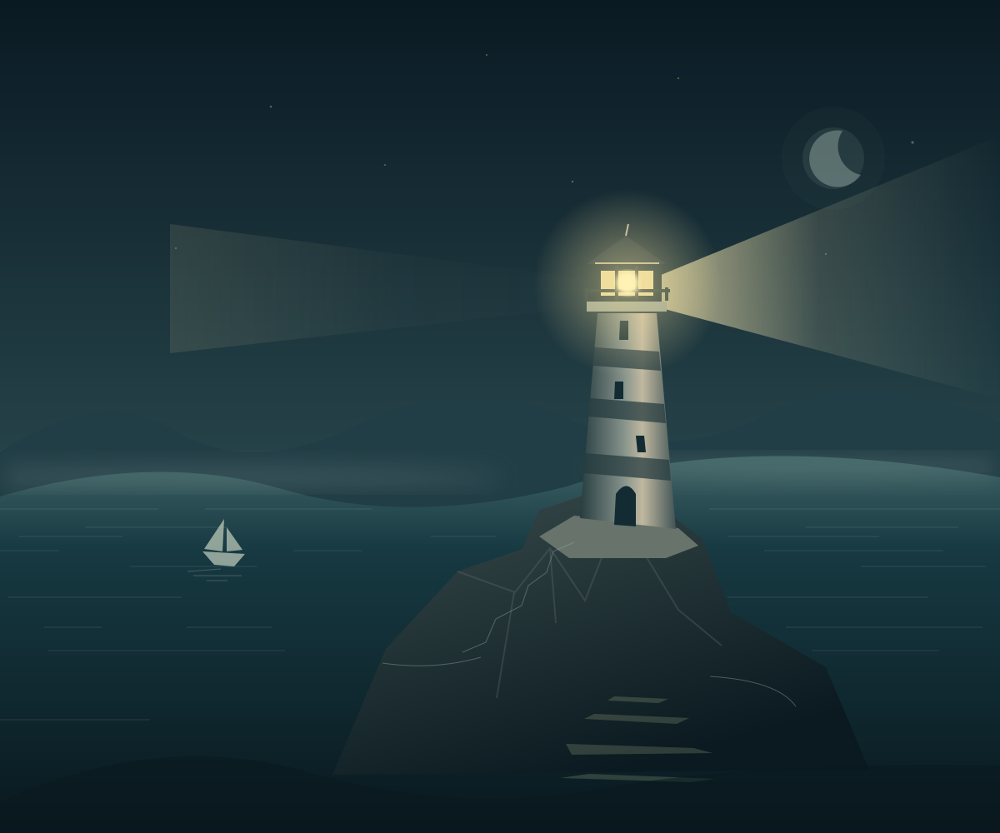

Направьте свет
Проявляйте силуэты ручным лучом и развивайте автоматический. Изучайте, что скрывает каждый спектр.

Атмосферная idle-игра для Android
Станьте смотрителем маяка на краю реальности. Проявляйте скрытое в тумане и открывайте море — по одному сигналу за раз.
Ваш свет меняет море
За горизонтом больше, чем кажется. И у каждого сигнала есть своя история.
Направляйте луч, собирайте Свет и улучшайте маяк. В коротких возвращениях к морю складывается большое путешествие: новые спектры, странные встречи и следы, которые замечает только внимательный смотритель.
Проявляйте силуэты ручным лучом и развивайте автоматический. Изучайте, что скрывает каждый спектр.
Бумажный корабль, чужой смотритель, ответная цепь. Собирайте сюжетные записи и находите связи между ними.
Великий шторм начинает новое плавание. Сохраняйте Осколки и открывайте новые возможности Оптики.
«Море не стало пустым.
Просто мы разучились его видеть».
В разработке · ANDROID
Игра проходит тестирование. Публикация в Google Play и RuStore готовится; подтверждённой даты релиза пока нет. Ссылки появятся здесь после запуска.
Вопрос, впечатление или замеченный сбой? Напишите разработчику.
al.mandarinne@gmail.com